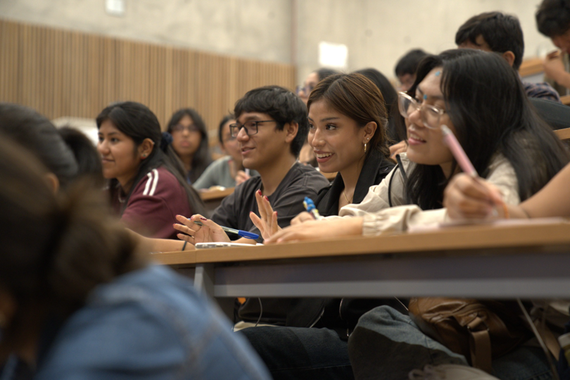
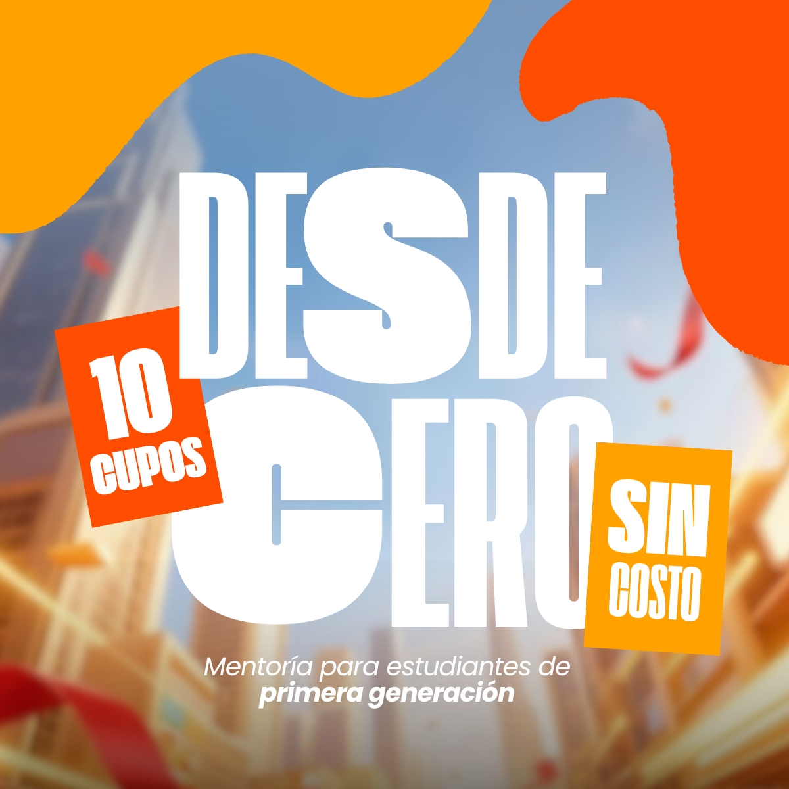
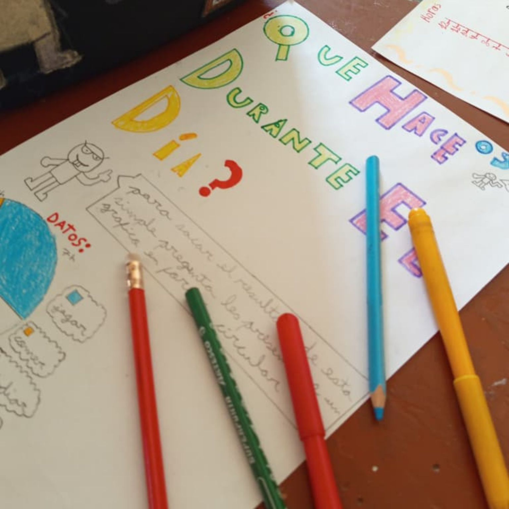
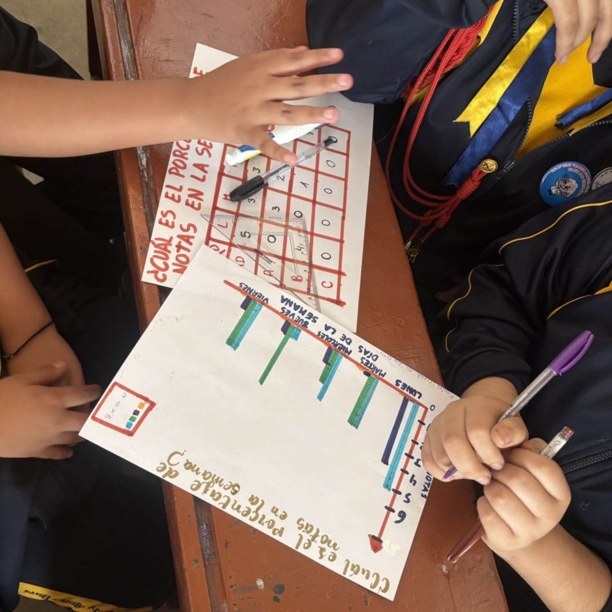
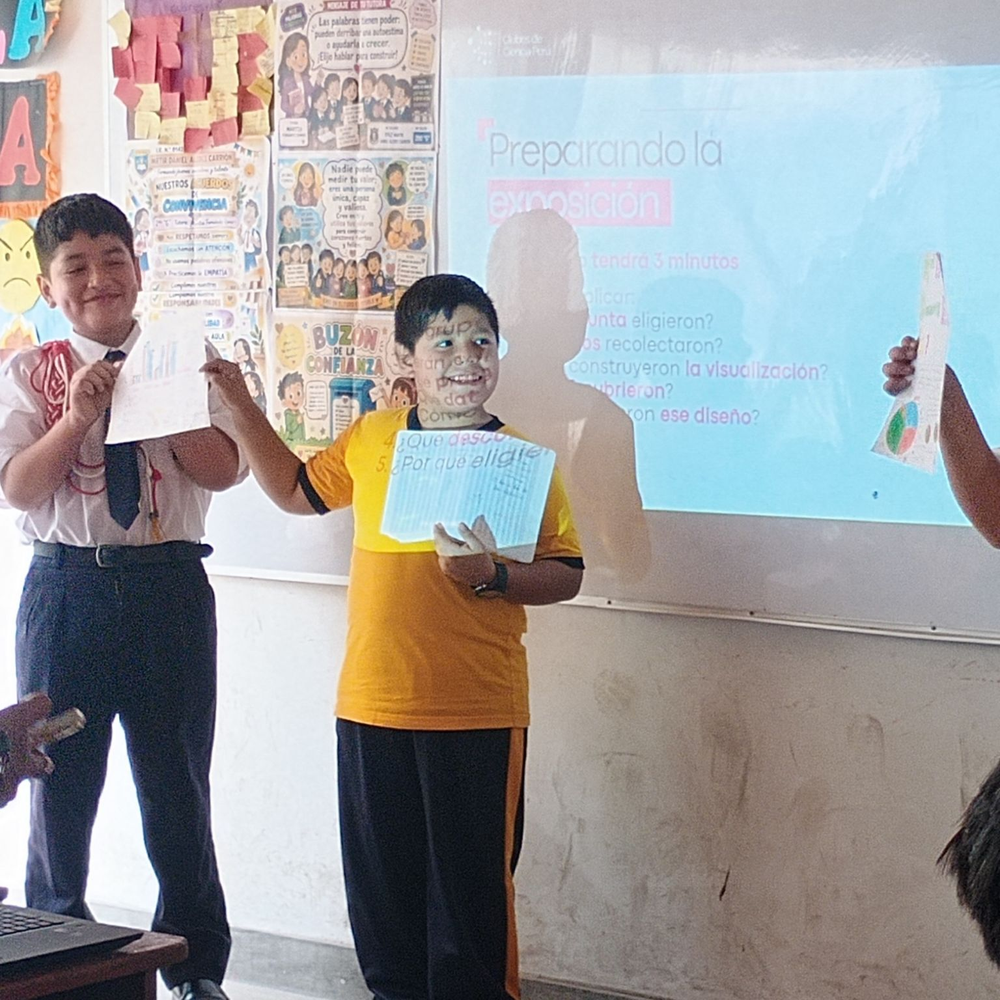
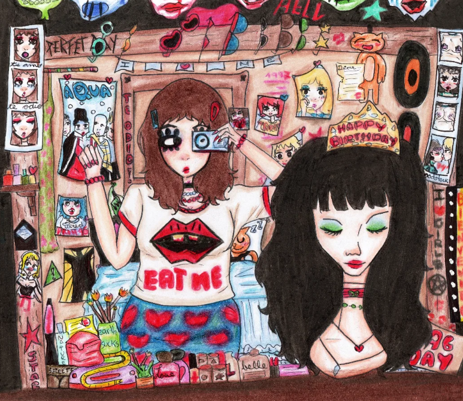
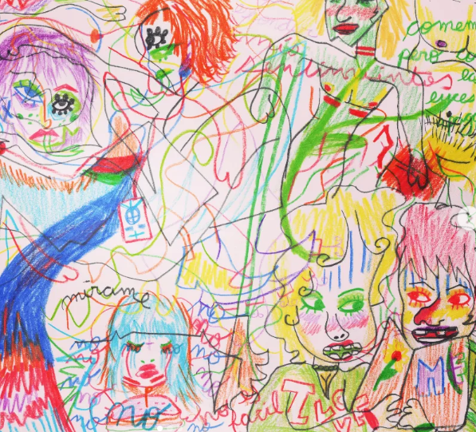
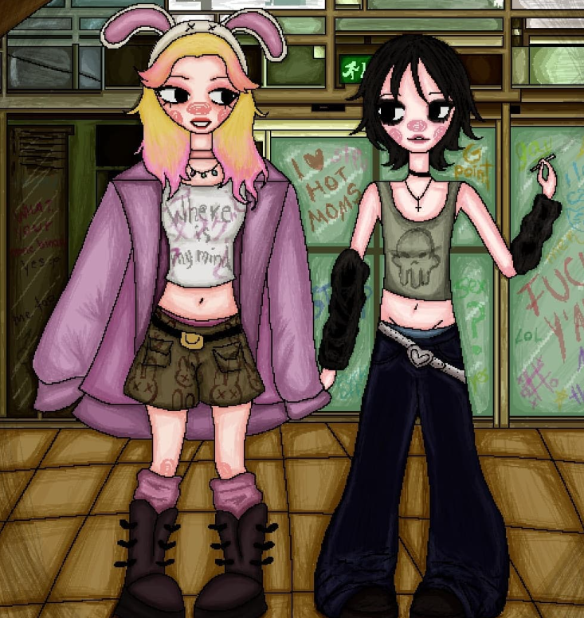
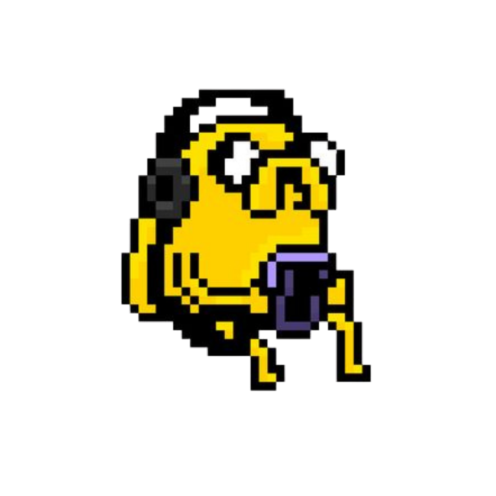

Research & Projects
Questions about our environment, explored through statistics and geospatial data.
EXPLORE PROJECTSI am a Statistics undergraduate at Universidad Nacional Mayor de San Marcos in Lima, Peru. My academic interests include ecological and spatial statistics, public health, and data science education.
Previously, I worked as a research assistant in the Space Physics Laboratory at Intinauta Research Center. My work focused on informal urban expansion and flood-related environmental risk in Belén, Iquitos, combining satellite imagery, geospatial analysis, and statistical tools. I worked under the mentorship of Cristian Ferradas and the supervision of Roberto Future.
Beyond research, I build spaces for people to learn together. Through initiatives such as Datea+ and the Young Data Scientists Camp, I work to make learning and opportunities in data science more accessible.
Faculty of Mathematical Sciences, UNMSM
Recognized for outstanding academic performance during the 2024-II and 2025-II semesters, ranking first in my cohort in the Statistics program.
Questions about our environment, explored through statistics and geospatial data.
EXPLORE PROJECTSResearch posters, academic presentations, and ideas shared along the way.
VIEW TALKSCreating opportunities to learn, collaborate, and find a place in data science.
DISCOVERRESEARCH & EXPLORATION
Applying statistical thinking to environmental and social questions.
Exploring urban change in Belén and its relationship with flood exposure, combining satellite imagery, geospatial analysis, and community validation.
Mentorship: Cristian Ferradas. Supervision: Roberto Future.
Exploring the stability of model explanations under adversarial perturbations in legal text classification.
An exploration of cancer incidence and mortality data in the United States from 2006 to 2016.
IDEAS IN CONVERSATION
Research shared through posters and academic presentations.
Galarza San Miguel, J. M. (2027). Satellite Monitoring of Informal Urban Expansion in Flood-Prone Zones: A Multitemporal Analysis of Belén in the Peruvian Amazon. Poster accepted for presentation at the International Statistical Ecology Conference (ISEC 2027), Mérida, Mexico.
ACCEPTED · UPCOMING POSTERGalarza San Miguel, J. M. (2025). Numerical Estimation of Gamma Distribution Parameters Using the Newton–Raphson Method Applied to Waiting-Time Modeling at Hospital Nacional Dos de Mayo. Poster presented at the Statistics Research Week, Faculty of Mathematical Sciences, National University of San Marcos, Lima, Peru.
POSTER PRESENTEDBUILDING OPPORTUNITIES TOGETHER
Making space for more people to learn, connect, and take their first steps in data science.
I founded and directed Peru's first data science camp for high school and gap-year students taking their first steps in the field.
Supported by UTEC and Microsoft Perú, with funding from DataCamp Donates.

Opening conversations about science and data, and connecting students with learning opportunities.
DATEA+ ON INSTAGRAMClubes de Ciencia Perú
I coordinate the Artificial Intelligence Club, helping create a space for students to learn and explore AI together.
EXPLORE THE CLUBA mentorship program I created for first-generation students, offering guidance on finding opportunities, writing a CV, preparing applications, and discovering learning resources.
Two cohorts completed. Preparing for our third!
READ THE UPDATE
LEARNING TOGETHER
An introduction to thinking with probability and statistics.
I taught Introduction to Probability in March 2026, helping students take their first steps in understanding uncertainty.
I am currently teaching Introduction to Statistics. I will share course materials and learning resources here.
I taught in several Peruvian public schools, encouraging students to discover statistics and develop an interest in learning with data.



NOTES & REFLECTIONS
A mentorship program helping first-generation students find opportunities, prepare a CV, and access learning resources.
Mentorship · First-generation students
On adapting to unfamiliar academic spaces as a first-generation student in STEM.
Personal essay · STEM
A mentorship program helping first-generation students find opportunities, prepare a CV, and access learning resources.
Desde Cero has now had two cohorts, and we are getting ready for the third! I created this mentorship program to support first-generation students as they find opportunities and take their next steps in academic life.
As a first-generation student myself, I know how much there can be to figure out beyond the classroom. Where do you find opportunities? How do you decide which ones fit your interests? What belongs in a CV when you are still beginning? These are the kinds of questions I want Desde Cero to make easier to ask.
The program brings together guidance on finding opportunities, preparing applications, and writing a CV, alongside learning resources students can return to as they move forward. The aim is to help participants describe what they have already done and identify what they would like to try next.
A first CV can include more than formal work experience. Coursework, student initiatives, personal projects, and community participation can all help tell the story of a student's interests and contributions. Learning to explain those experiences clearly is an important part of beginning.
Reaching two cohorts means a great deal to me. Desde Cero began with a simple purpose: to offer the kind of guidance that can make an unfamiliar process feel more approachable. I am excited to keep building that space as we prepare for our third cohort.
I will share more about the next cohort here when the details are ready. For now, I am happy to mark this step and keep working toward what comes next. :)
On adapting to unfamiliar academic spaces as a first-generation student in STEM.
As a first-generation university student in Peru, I am learning two things at once: statistics, and how to find my way through academic life. One has courses, exercises, and exams. The other appears in less predictable places: an application form, an email to a researcher, a conversation about opportunities I am only beginning to understand. Both require effort, but only one usually appears on a transcript.
Being the first in my family to attend university gives me a great sense of possibility. It also means that many of the decisions ahead of me are unfamiliar at home. My family can care deeply about my education without knowing how a research internship works or what a future in science might look like. That distinction matters to me. There is support in my life, even when there is no ready-made set of instructions.
Academic spaces have a vocabulary that extends beyond the subject being taught. Finding a mentor, describing a research interest, approaching a professor, or understanding the purpose of a conference are all things students have to learn. When those things are already familiar to the people around you, it can be easy to mistake their familiarity for a measure of your own ability.
I try to remember this when a new environment feels difficult. A question that seems obvious to someone else may be a question I am encountering for the first time. Asking it takes a little courage. Leaving it unanswered, however, makes every next step harder. I want to become more comfortable saying what I understand, what I have tried, and where I need guidance.
Language adds another layer. I can be excited about an idea and still struggle to express it as naturally in English as I would in Spanish. There is a difference between having something to contribute and being able to say it quickly. I am learning to give myself time for both. Preparing a few questions before a meeting can help; so can remembering that a pause does not erase the thought behind it.
I care about doing well academically, and recognition for my work means a great deal to me. Still, an academic record cannot resolve every uncertainty. An opportunity may come with travel costs, competing schedules, or decisions about how to continue my studies while taking part. These practical questions deserve as much attention as the excitement of being selected.
For me, adapting means being willing to discuss those conditions honestly. I can be grateful for an opportunity and ask what would make it possible to participate. I can have ambitious goals and need help planning the next step. I am still learning how to hold those things together without treating every obstacle as a judgment about whether I belong.
I also want to be careful about the stories I tell about perseverance. It is tempting to describe a difficult experience only after it has become an achievement. That leaves out the uncertainty, the people who helped, and the circumstances that made progress possible. When I share an opportunity or an award, I want there to be room for that fuller story.
These questions are connected to why I care about data science education and student communities. Through Datea+ and the Young Data Scientists Camp, I want to help create spaces where students can ask early questions without feeling that they should already know the answers. A clear explanation, an accessible learning resource, or a conversation with someone a little further along can make a next step easier to imagine.
Building these spaces also reminds me that I am still a learner. I do not need to have solved every difficulty before sharing something useful. I can explain what I have learned, acknowledge what I do not know, and keep listening. That feels like a more honest foundation for community than pretending to have a complete plan.
I am writing this while my path is still taking shape. There are unfamiliar rooms ahead of me, and probably questions I have not yet learned to ask. I hope to enter them with curiosity, prepare as well as I can, and let other people help. As I find my way, I want to leave clearer directions for the students who come next.
THE PERSON BEHIND THE WORK
I love drawing. This is a little corner of the website for sharing what I create, outside research and the classroom.



ON REPEAT · SEPTEMBER 2026
A song I've been coming back to this month. Jake has the headphones.

Tap Jake for this month's song